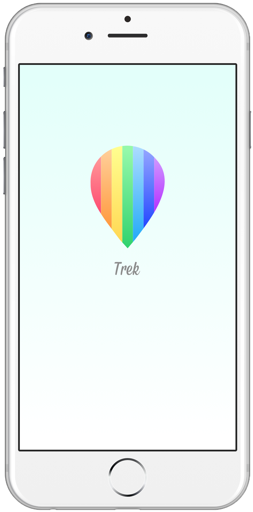
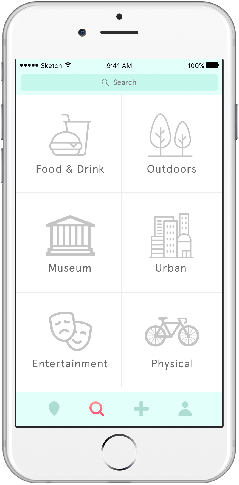
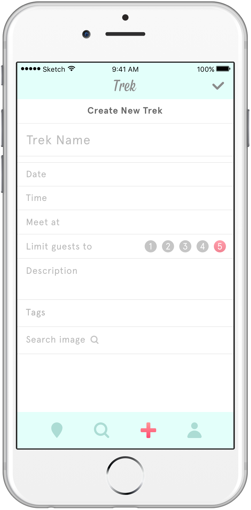
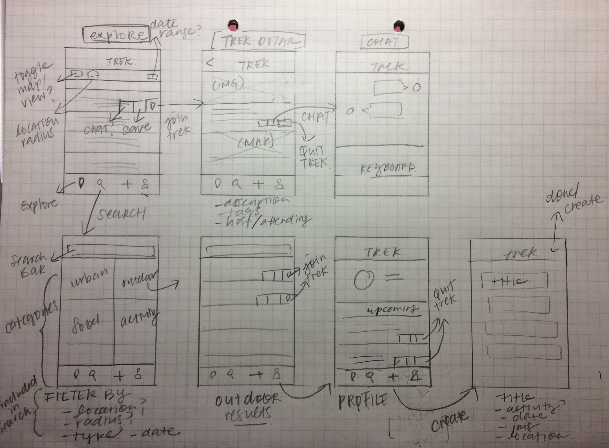

Trek

Trek is a mobile app that reinvents the solo traveling experience by bringing individuals together when they seek an adventure
Personal Project
This is an ongoing personal project I am developing based on the start of an idea from a design-thinking workshop, where my workshop partner told me about his desire for more independent, laid-back traveling without joining a tour group.Frustrations of Traveling
Relying on a tour group leads to less flexibility and independenceFear of being lonely when you travel by yourself
Desire to travel independently without having to make detailed plans
Solution
Trek aims to make exploring a social but intimate experience by allowing users to attend location based meet ups, which are limited to six people, that any user can create. Trek eliminates the frustrations of traveling by providing company, travel ideas, and easy coordination to travelers. A solo traveler can browse treks for ideas of what to do or attend a trek in a small group, making it easier to connect with people and places.Users can easily browse, save, and attend treks, which are limited to 6 people to create an intimate and easy experience.
Upcoming, saved, and past treks are stored in your profile. Connect with other people from your trek by using the chat.

Type in any search term or search treks by category.

Anyone can create a trek.
Further Development
These are initial mockups and would benefit from further development through user tests and research. Some other ideas to explore are:The usage of "tour guides" rather than a regular host, where users could create small tours and get paid
A rating system for hosts/guides/travelers
A more sophisticated system of features for different types of users (a tour guide, regular host, or traveler
Wireframe
Process:
individual projectuser interviews
brainstorm
user requirements
wireframe
visual design
prototype (Sketch and Origami Studio)
Stock photo source: unsplash